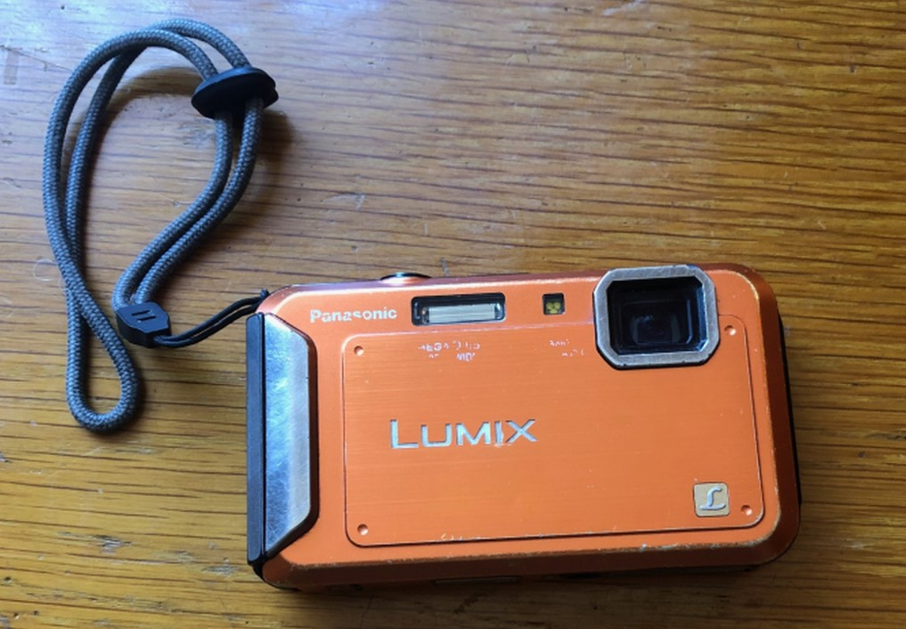

My preferred and recommended outdoor adventure camera
Smartphones are the most common, yet worst, cameras used for backcountry adventures. Using a normal camera solely meant for video and photography is a better option.
I use the Panasonic Lumix DMC-TS20 waterproof shockproof camera. It is a waterproof and shockproof camera from the 2010’s. I have no specific attachment to this brand or model,
but I think this type of camera is a great fit for my purposes and trip documentation philosophy. This article outlines the downsides of using a smartphone camera in
the backcountry, the benefits of using a normal camera instead, and the additional benefits of using a waterproof shockproof camera.
Downsides of using a smartphone,
They are expensive and fragile items. Backcountry photos are often taken in environments that put your smartphone at risk of breaking. Large smartphones with touchscreens are not ergonomic and easy to take a photo with. If your smartphone breaks, you lose a lot more than a camera.
They have bad battery life. With a regular camera, you turn it off after you finish taking photos. Smartphones go into sleep mode and continue to drain your battery. Turning them off and on after taking photos takes too long. Moreover, you need to bring a battery pack and charger if you want to reliably use a smartphone camera.
They have limited storage space. There is no way to add storage space to your phone in the backcountry, you can only free up space by deleting items from your phone. I prefer not to have to do this while in the backcountry.
They encourage unorganized storage of content. Content is saved directly to your camera roll, so by the end of your trip you have a disproportionate amount of trip photos in the same place you store all your other photos. I find this annoying when viewing my camera roll.
They are what I want to get away from. I prefer to avoid looking at or feeling a smartphone in the backcountry.
Benefits of using a normal camera,
They are ergonomic and have safety straps that make it hard to drop the camera.
They permit the use of spare batteries and memory cards which are lightweight and easy to pack.
They have memory cards which make it easy to offload and organize photos. After every trip I go on, I put the trip photos in a labeled folder on my computer and then upload that folder to Google Drive and share it with my friends.
Benefits of using a waterproof and shockproof camera,
They can be used in a wider range of environments than other cameras.
They reduce the fear of breaking your camera.
They eliminate the need to bring along extra cases to protect from impact or water.
Other benefits of my Panasonic Lumix DMC-TS20,
It is an older model camera that cost less than 100$ used. If I lose it or break it, I won't be that disappointed.
Its photos take up little storage space. This permits fast uploading and easy computer storage. The photos are not top quality but this does not bother me.
The best outdoor adventure camera is based on personal preference. An adventurer with different uses and values could probably put together a long list of downsides of using waterproof
shockproof cameras. But for my purposes, I currently believe that waterproof shockproof cameras are the best for outdoor adventures. (And smartphones are the worst!)

My Panasonic Lumix DMC-TS20 waterproof shockproof camera